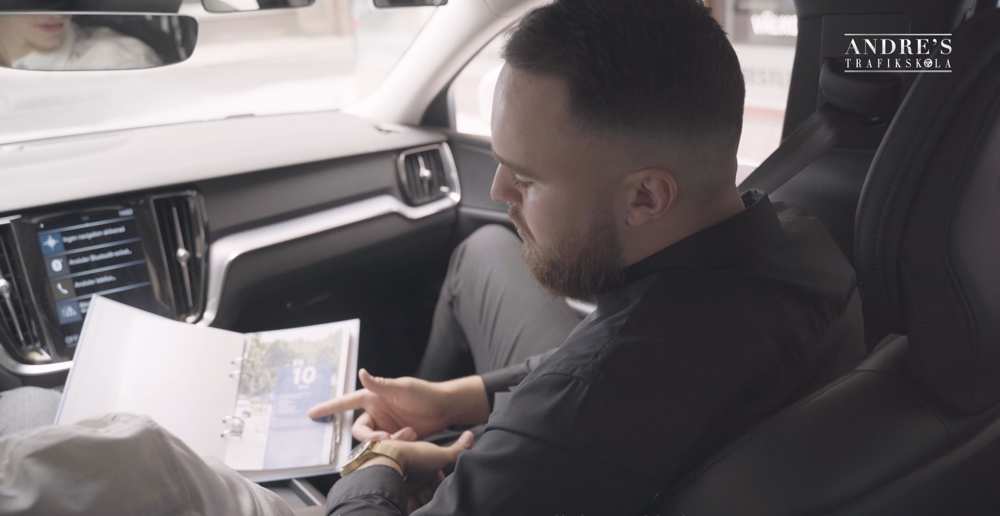

Lär dig köra manuell bil med Volvo V60. Manuellt körkort ger dig friheten att köra alla bilar.
Manuellt körkort är det mest mångsidiga körkortsvalet. Med ett manuellt körkort kan du köra alla bilar – oavsett om de har manuell eller automatisk växellåda. Det är det alternativ vi rekommenderar för yngre förare och alla som vill ha maximal frihet med körkortet.
Att lära sig köra manuellt kräver lite mer övning, framförallt kopplingstekniken och smooth växling. Hos Andres Trafikskola använder vi tålmodiga pedagogiska metoder och vår instruktör André är känd för att göra manuell körning stressfri och rolig att lära sig.
Med manuellt körkort kan du köra alla bilar – manuella och automatiska – i hela Sverige och EU.
Att hyra bil utomlands, låna en kompis bil – med manuellt körkort spelar bilens typ ingen roll.
Du lär dig hur bilen verkligen fungerar – ett djupare förstånd för fordon och dess mekanik.
Manuell körning ger ofta bättre känsla för bilen och mer kontroll i svåra trafiksituationer.
Manuella bilar är ofta mer prisvärda att köpa, både nya och begagnade – ett smart val för plånboken.
Vissa jobb inom transport, bygg och räddningstjänst kräver manuellt körkort – fler karriärmöjligheter med manuell behörighet.
Vi lär dig manuell körning i tydliga steg:
Start, koppling, gaspedal – vi lär oss i lugn miljö utan trafik.
Rör oss ut i lugn trafik, övar start i uppförsbacke, stannar och startar.
Rondeller, korsningar, filbyten – manuell växling i flödig stadstrafik.
Höga hastigheter, smooth körning, uppväxling och nedväxling vid omkörning.

Vi erbjuder enstaka körlektioner och förmånliga körpaket för manuell körning. Alla lektioner är 70 minuter långa och körs i vår Volvo V60 med manuell växellåda. Se vår kompletta prislista med alla paket och sparmöjligheter på vår prissida.
Manuellt körkort kräver lite mer övning för att bemästra kopplingstekniken, men med tålmodig undervisning lär sig de flesta ganska snabbt. Det är inte avsevärt svårare – det är bara fler moment att koordinera.
Ja! Med manuellt körkort kan du köra alla bilar – manuella och automatiska. Det är en av de stora fördelarna med att ta manuellt körkort.
För manuell körkortsutbildning använder vi Volvo V60 (2019) som är utrustad med manuell växellåda. Det är en pålitlig och välkänd bil som ger en bra inlärningsmiljö.
De flesta elever känner sig bekväma med manuell växling efter 3–5 körlektion. Att bli riktigt smooth tar lite längre tid, men med regelbunden övning sker framstegen snabbt.
Absolut! Manuellt körkort ger dig maximal flexibilitet och du kan köra alla bilar. Dessutom är det fortfarande vanligt med manuella bilar i Europa, vilket gör det värdefullt om du reser och vill hyra bil utomlands.
Ring oss eller skicka ett SMS.
Du kan också fylla i formuläret så återkommer vi så snart vi kan.